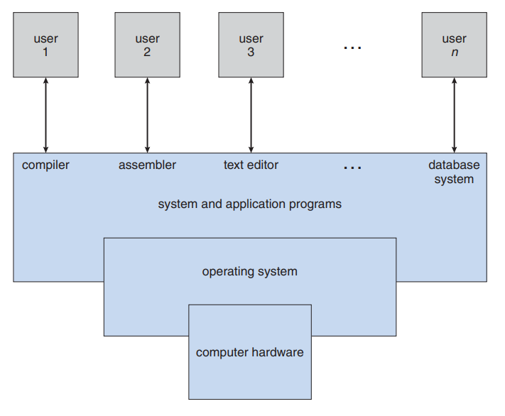
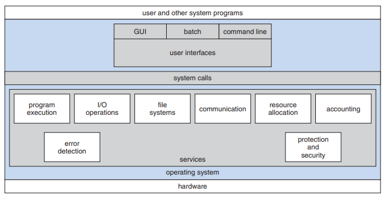
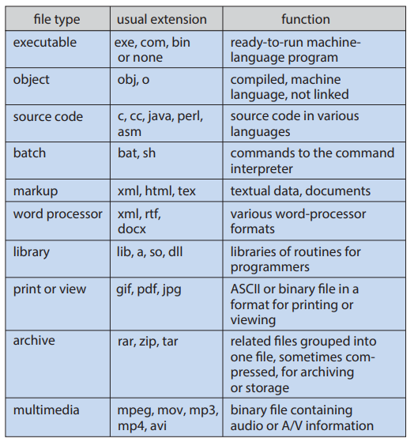
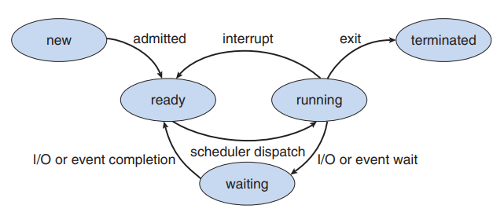
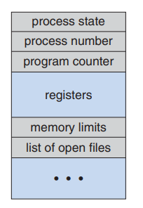

⬅ Vissza a főoldalra
4. tétel: Operációs rendszerek fogalma, felépítése, osztályozásuk. Fájlok és fájlrendszerek. Speciális fájlok Unix alatt. Átirányítás, csővezetékek. Folyamatkezelés. Jelzések, szignálok. Ütemezett végrehajtás.
Operációs rendszerek fogalma
-
Alapvető definíció (Közvetítő szerep):
- Egy program, amely a számítógép hardverét kezeli.
- Közvetítő a felhasználó és a hardver között.
- Fő célja: kényelmes és hatékony környezet biztosítása a programok futtatásához.
-
Rendszerszemlélet - Erőforrás-kezelő:
- Az OS feladata a hardveres erőforrások (CPU-idő, memória, fájltároló, I/O eszközök) elosztása.
- Kezeli az egymással versengő folyamatok kéréseit a hatékony és igazságos működés érdekében.
-
Felhasználói / Vezérlési szemlélet - Irányító program:
- Menedzseli és felügyeli a felhasználói programok végrehajtását.
- Fő célja: a szoftveres hibák és a számítógép nem megfelelő használatának megelőzése.
- Felügyeli az I/O eszközök működését és az azokkal való kommunikációt.
Számítógépes rendszer felépítése
Egy számítógépes rendszert absztrakt módon négy fő komponensre bonthatunk:
- Hardver: A rendszer fizikai erőforrásait biztosítja (CPU, memória, I/O eszközök).
- Operációs rendszer: Irányítja és koordinálja a hardver használatát az alkalmazások és a felhasználók között. Önmaga nem végez hasznos munkát, csupán absztrakciót és megfelelő környezetet biztosít a programok futtatásához.
- Alkalmazási programok: Ezek segítségével oldják meg a felhasználók a konkrét problémáikat (pl. szövegszerkesztők, böngészők).
- Felhasználók: Emberek, gépek vagy akár más számítógépek, amelyek a rendszert használják.

A felhasználói szemszög (User View)
A felhasználók elvárásai attól függnek, hogy milyen felületen és környezetben dolgoznak a számítógéppel:
- Személyi számítógépek (PC-k) és mobilok: Mivel ezeket az eszközöket jellemzően egyetlen felhasználó használja, a fő cél a munka és a játék élményének maximalizálása.
- Számukra a legfontosabb a teljesítmény és a felhasználóbarátság.
- Az erőforrás-kihasználtság – vagyis az, hogy a szoftver- és hardvererőforrások hogyan vannak megosztva – egyáltalán nem érdekli őket, az OS dolga, hogy a hardveres részleteket elrejtse (absztrakció).
- Mainframe-ek és miniszámítógépek: Itt több felhasználó csatlakozik terminálokon keresztül egy közös géphez. Ebben a környezetben az operációs rendszer elsődleges feladata az erőforrás-kihasználtság optimalizálása, hogy senki ne kapjon indokolatlanul nagy részt a CPU-ból vagy a memóriából.
- Munkaállomások: Ezek a rendszerek kompromisszumot kötnek; egyensúlyozniuk kell a dedikált, egyéni teljesítmény biztosítása és a hálózatos erőforrások (pl. fájlszerverek) optimális megosztása között.
Operációs rendszerek felépítése
Az operációs rendszer szolgáltatások és interfészek hierarchikus összessége, amely biztosítja a programok végrehajtásához szükséges környezetet. A szerkezet a felhasználói igényektől halad a hardver felé.
- Felhasználói felület (User Interface): Az OS legfelső rétege, amely lehetővé teszi a felhasználó számára a rendszerrel való interakciót. Főbb típusai: a parancssoros (CLI), a grafikus (GUI) és a kötegelt (Batch) interfész.
- Rendszerhívások (System Calls): Ez a réteg képezi a hidat a felhasználói alkalmazások és az OS szolgáltatásai között. Biztosítja az utat a programok számára a kernel funkcióinak eléréséhez.
- Szolgáltatási réteg: Az OS belső funkcióinak összessége, amely a rendszer hatékonyságát és a felhasználói kényelmet szolgálja (pl. programvégrehajtás, I/O műveletek, fájlrendszer-kezelés, kommunikáció, hibakezelés és erőforrás-elosztás).

A rendszer központi összetevői
Kernel
Az operációs rendszer magja, amely a számítógép bekapcsolásától kezdve folyamatosan fut.
- Közvetlenül felügyeli a hardvert.
- Felelős a legkritikusabb feladatokért: folyamatok ütemezése (scheduling), memória-menedzsment és a fájlrendszer fizikai kezelése.
- Biztosítja a folyamatok közötti védelmet és elszigetelést.
Eszközillesztők (Device Drivers)
Speciális szoftvermodulok, amelyek a hardvereszközök és az operációs rendszer közötti kommunikációs interfészt valósítják meg.
- Elrejtik a hardver specifikus részleteit a kernel és az alkalmazások elől.
- Lehetővé teszik az I/O műveletek egységes kezelését.
Felhasználói réteg és alkalmazások
Az a környezet, ahol a felhasználói programok és a rendszer segédprogramjai futnak.
- Itt történik az alkalmazások (pl. szövegszerkesztők, fordítóprogramok) futtatása.
- Az itt futó programok csak rendszerhívásokon keresztül érhetik el a hardveres erőforrásokat, így garantálva a rendszer stabilitását és biztonságát.
Különböző operációs rendszer felépítések
Egyszerű struktúra
A legkorábbi operációs rendszereket nem tervezték nagynak és komplexnek, így struktúrájuk is korlátozott.
- Példa (MS-DOS): Arra tervezték, hogy a lehető legkisebb helyen a legnagyobb funkcionalitást nyújtsa. A modulok nincsenek szigorúan elkülönítve.
- Hiányzó védelem: Nem támogatja a hardveres dual-mode (felhasználói és kernel mód) elkülönítést. Az alkalmazások közvetlenül hozzáférhetnek az alapvető I/O rutinokhoz és a hardverhez.
- Sebezhetőség: Mivel nincs védelem, egyetlen meghibásodott felhasználói program könnyen felülírhatja az operációs rendszert, ami az egész gép összeomlásához vezethet. Egyidejűleg csak egy folyamat futását támogatja.
Monolitikus rendszerek
Az operációs rendszer minden funkciója a hardver és a rendszerhívási interfész (system call interface) között helyezkedik el egyetlen nagy blokkban.
- Példa (Eredeti UNIX): Két fő részre bomlik: rendszerprogramokra és a kernelre. A kernel egyetlen hatalmas program, ami felelős a CPU ütemezésért, a fájlrendszerért, az eszközök kezeléséért stb.
- Előny (Teljesítmény): Mivel minden egyetlen címtérben (kernel módban) van, a belső kommunikáció és a rendszerhívások rendkívül gyorsak, kevés overhead-del járnak.
- Hátrány: Az egész rendszer átláthatatlan, nehéz implementálni, bővíteni és karbantartani.
Rétegzett architektúra
Az operációs rendszert kisebb, szigorúan meghatározott szintekre (rétegekre) bontják a könnyebb kezelhetőség érdekében.
- Felépítés: A legalsó réteg (0. réteg) maga a hardver, a legfelső réteg (N. réteg) pedig a felhasználói felület.
- Adatrejtés (Separation of concerns): Egy adott réteg kizárólag az eggyel alatta lévő réteg szolgáltatásait és funkcióit használhatja fel. A belső adatstruktúrák és hardveres részletek rejtve maradnak a felsőbb szintek elől.
- Előny: Sokkal egyszerűbb a tervezés és a hibakeresés (debugging). Ha az 1. réteg már tesztelt és működik, akkor a 2. réteg fejlesztésekor felmerülő hiba csakis a 2. rétegből származhat.
- Hátrány: Alacsonyabb teljesítmény. Egy felhasználói kérésnek több rétegen kell keresztülhaladnia (minden réteghatáron paramétereket kell másolni), mire eléri a hardvert. Nehéz pontosan definiálni a rétegek sorrendjét.
Mikrokernel architektúra
Az operációs rendszer méretének csökkentése a cél: minden nem kritikus komponenst kivesznek a kernelből, és azokat felhasználói szintű (user-space) folyamatokként futtatják.
- Példa: Mach operációs rendszer.
- A kernel feladata: A mikrokernel szinte csak a folyamatok közötti kommunikációt (message passing), az alapvető memóriakezelést és a CPU ütemezést végzi.
- Előny (Bővíthetőség és Biztonság): Nagyon könnyű új szolgáltatásokat hozzáadni (nem kell a kernelt újrafordítani). Ha egy szolgáltatás (például egy videokártya-illesztő) összeomlik, a rendszer többi része érintetlen marad, a gép nem fagy le.
- Hátrány: Teljesítménycsökkenés. A felhasználói programok és a rendszer-szolgáltatások közötti gyakori üzenetküldés rengeteg kontextusváltást (context switch) és kommunikációs overheadet okoz.
Moduláris architektúra
A legmodernebb operációs rendszerek a betölthető kernel modulokat használják, amely egy objektumorientált megközelítés.
- Példa (Linux, Solaris): A kernel csak a legkritikusabb alapfunkciókat tartalmazza, de képes futásidőben (on-demand), igény szerint új modulokat (fájlrendszereket, drivereket) betölteni.
- Hasonlóság a mikrokernellel: A mag kicsi marad, a funkciók logikailag jól elkülönülnek, és szabványos interfészeken keresztül kommunikálnak.
- Különbség a mikrokerneltől (Teljesítmény): Itt minden betöltött modul kernel módban (egy közös címtérben) fut, így megmarad a monolitikus rendszerek gyorsasága (nincs üzenetküldési overhead).
Hibrid rendszerek
A gyakorlatban egyetlen modern operációs rendszer sem követ tisztán egyetlen modellt; különböző architektúrákat ötvöznek a biztonság, a teljesítmény és a használhatóság egyensúlya érdekében.
- Példa (Windows): Alapvetően monolitikus a teljesítmény miatt, de mikrokernel vonásokat is mutat azzal, hogy az operációs rendszer "személyiségeit" különálló alrendszerként (subsystem), felhasználói módban futtatja.
- Példa (Apple Mac OS X): A rendszermag (Darwin) hibrid. Egyrészt tartalmaz egy Mach mikrokernelt (ami a memóriakezelésért, szálakért és IPC-ért felelős), másrészt egy BSD UNIX monolitikus kernelt (ami a POSIX API-t, fájlrendszert és hálózatot biztosítja), ezen felül pedig dinamikusan betölthető modulokat (kexts - I/O Kit) is használ.
Operációs rendszerek szolgáltatásai és feladatai
A rendszer zavartalan működése és az erőforrások kezelése érdekében az operációs rendszer az alábbi alapvető feladatokat látja el:
- Folyamatkezelés
- I/O rendszerkezelés
- Memóriakezelés
- Fájlkezelés
- Tárhelykezelés
- Biztonság és védelem
Operációs rendszerek osztályozása
Az operációs rendszereket számos szempont és környezet alapján kategorizálhatjuk:
- Felhasználók száma szerint:
- Egyfelhasználós: (pl. DOS)
- Többfelhasználós: (pl. Linux, Windows)
- Hardver méret szerint:
- Mikrogépes: (pl. Windows, Unix alapú PC-k)
- Kisgépes: (pl. Unix)
- Nagygépes (Mainframe): nagyvállalati központi rendszerek
- Processzorkezelés szerint:
- Egyfeladatos: (pl. DOS)
- Többfeladatos (Multitasking): (pl. Unix)
- Cél szerint:
- Általános célú
- Speciális: (pl. beágyazott, valós idejű rendszerek)
- Felépítés szerint:
- Monolitikus: (pl. DOS, eredeti Unix)
- Rétegzett architektúra: (elméleti megközelítés)
- Mikrokernel architektúra: (pl. Mach, MacOS részei)
- Moduláris: (pl. Linux)
- Hibrid: (pl. Windows, Mac OS X)
- Felhasználói felület szerint:
- Szöveges (CLI): (pl. DOS)
- Grafikus (GUI): (pl. Windows)
- Jogállás szerint:
- Nyílt forráskódú: (pl. Linux)
- Zárt forráskódú / Kereskedelmi: (pl. Windows)
Fájlok, fájlrendszerek
A fájl fogalma
A fájl az operációs rendszer szempontjából egy folytonos logikai címtér.
- A számítógép a fizikai tárolóeszközök (mágneslemezek, SSD-k stb.) működését absztrahálja egy logikai tárolási egységgé.
- A fájl egymással összefüggő információk névvel ellátott gyűjteménye a másodlagos háttértáron.
- Tartalmazhat adatot (számikus, alfabetikus, alfanumerikus, bináris) vagy programokat (futtatható állományok, forráskódok).
Fájl attribútumai (File Attributes)
A fájl nevén és adatain kívül az operációs rendszer különféle metaadatokat (attribútumokat) is tárol a fájlról:
- Név (Name): Az egyetlen olyan információ, amelyet az emberi felhasználó is olvasható formában lát.
- Azonosító (Identifier / ID): Egy egyedi belső címke (általában egy szám), amely a fájlrendszeren belül azonosítja a fájlt (a felhasználó számára rejtett).
- Típus (Type): Arra szolgál, hogy a különböző formátumokat (pl. szöveg, futtatható fájl, archívum) támogató rendszerek megfelelően tudják kezelni azokat.
- Hely (Location): Egy mutató (pointer) az eszközre és a fájl pontos fizikai helyére a tárolón.
- Méret (Size): A fájl aktuális mérete (bájtban, szavakban vagy blokkokban megadva).
- Jogosultság és védelem (Protection): Hozzáférés-szabályozási adatok, amelyek meghatározzák, hogy ki végezhet olvasási, írási vagy futtatási műveleteket a fájlon.
- Időbélyegek és felhasználói adatok (Time, date, and user identification): Létrehozás, utolsó módosítás és utolsó olvasás dátuma; ezek biztonsági, monitorozási és használati statisztikákhoz szükségesek.
Fájlműveletek (File Operations)
Az operációs rendszer rendszerhívásokat (system calls) biztosít a fájlok kezeléséhez. Az alapvető műveletek a következők:
- Létrehozás (Create): Hely keresése a fájlrendszerben, majd bejegyzés létrehozása a könyvtárban (directory) az új fájl nevével és helyével.
- Írás (Write): A fájl nevének és a kiírandó információnak a megadása. A rendszer egy írási mutatót (write pointer) tart karban, hogy tudja, hol tart a művelet.
- Olvasás (Read): A fájl nevének és annak a memóriablokknak a megadása, ahová a fájl tartalmát be kell tölteni (egy olvasási mutató segítségével).
- Fájlon belüli pozicionálás (Reposition / Seek): Az olvasási/írási mutató áthelyezése egy adott értékre a fájlon belül. (Ez nem jár I/O művelettel, csak könyvtár/mutató manipulációval).
- Törlés (Delete): A fájl megkeresése a könyvtárban, a könyvtárbejegyzés törlése, valamint a fájl által elfoglalt lemezterület felszabadítása (visszaadása a szabad területek listájába).
- Csonkolás (Truncate): A fájl tartalmának teljes törlése, de az attribútumok (pl. név, jogosultságok) megtartása. A fájl hossza ilyenkor nullára (0) csökken.
Megnyitás és Bezárás (Open / Close):
Ahhoz, hogy az OS ne keresse meg a fájlt a könyvtárban minden egyes olvasásnál és írásnál, a folyamatoknak használat előtt meg kell nyitniuk a fájlt (open()). Ilyenkor a fájl adatai bekerülnek a memóriában lévő nyitott fájlok táblájába (open-file table). Használat után a fájlt be kell zárni (close()).
Gyakori fájltípusok és kiterjesztések

Fájlrendszer
Alapvető fogalom és felépítés
- A fájlrendszer az operációs rendszer leginkább látható része, amely a háttértárolókon lévő adatok és programok tárolását, elérését és rendszerezését biztosítja.
- Két fő komponensből áll:
- Fájlok halmaza: amelyek a tényleges (egymással összefüggő) adatokat tárolják. Maga a fájl az operációs rendszer szemszögéből egy absztrakt adattípus.
- Könyvtárstruktúra (Directory structure): amely rendszerezi a fájlokat, és nyilvántartja a velük kapcsolatos információkat (metaadatokat, attribútumokat és a fizikai helyüket).
Működési elv (Szektorok és blokkok)
- Az operációs rendszer elvonatkoztat a tárolóeszközök fizikai tulajdonságaitól, és a fájlokat, mint logikai tárolási egységeket képezi le a fizikai médiára.
- A lemezes háttértárak fix méretű egységekkel, úgynevezett blokkokkal (fizikai rekordokkal) dolgoznak, amelyek méretét a lemez szektorainak mérete határozza meg (jellemzően 512 bájt).
- A fájlrendszer feladata, hogy a logikai adatfolyamot ezekbe a fizikai blokkokba "csomagolja", összekapcsolja őket, és pontosan nyilvántartsa, hogy a lemez melyik blokkja/szektora melyik fájlhoz tartozik (allokációs módszerek, pl. láncolt vagy indexelt allokáció).
Példák ismert fájlrendszerekre a könyv alapján
- NTFS / Veritas: Naplózó (log-based / journaling) fájlrendszerek, amelyek a metaadat-módosításokat egy naplófájlba írják a rendszerösszeomlások utáni gyors és konzisztens helyreállítás érdekében.
- ext3 / ext4: A Linux leggyakoribb standard fájlrendszerei (az ext3 szintén naplózó).
- ZFS / WAFL: Fejlett fájlrendszerek, amelyek sosem írják felül a meglévő blokkokat (hanem új blokkba írnak, és frissítik a mutatókat), valamint a ZFS folyamatos ellenőrzőösszegeket (checksum) használ a teljes adatintegritás biztosítására.
- (Megjegyzés: A FAT/FAT32 is egy klasszikus, láncolt allokációt használó fájlrendszer, amely egy File Allocation Table-ben tartja nyilván a blokkokat.)
Speciális fájlok Unix alatt
A Unix-alapú rendszerek egyik legfontosabb alapelve, hogy minden erőforrást – legyen az hardver, memória vagy kommunikációs csatorna – egységesen fájlként kezelnek. Ez lehetővé teszi, hogy a rendszer ugyanazokat az alapvető műveleteket (olvasás, írás) használja szinte mindenhez.
Hivatkozások (Linkek)
Olyan bejegyzések a fájlrendszerben, amelyek egy már létező fájlra mutatnak.
- Hard link: Egy fájlhoz rendelt második név. Az adat addig marad meg a lemezen, amíg az összes hozzá tartozó hard linket le nem törlik.
- Symbolic link (Szimbolikus link): Egy olyan mutató, amely csak az eredeti fájl elérési útvonalát tartalmazza. Ha az eredeti fájlt törlik vagy áthelyezik, a szimbolikus link használhatatlanná válik.
Eszközfájlok (Device Files)
A hardvereszközök a fájlrendszeren keresztül, jellemzően a /dev könyvtárban érhetőek el.
- Karakteres eszközök: Olyan hardverek, amelyek az adatokat folyamatosan, bájtonként kezelik (például a billentyűzet vagy a terminál).
- Blokkos eszközök: Olyan tárolóeszközök, amelyek az adatokat rögzített méretű csomagokban, úgynevezett blokkokban mozgatják (például a merevlemezek).
Virtuális speciális fájlok
Ezek a fájlok nem fizikai eszközöket képviselnek, hanem a rendszer belső funkcióit látják el:
- /dev/null (Az adatnyelő): Minden beleírt adatot megsemmisít, olvasáskor pedig azonnal jelzi, hogy a fájl üres. Felesleges kimenetek elnyelésére használatos.
- /dev/random (A véletlengenerátor): Folyamatosan véletlenszerű bájtokat állít elő, ami elengedhetetlen a titkosítási folyamatokhoz és a biztonságos kulcsok létrehozásához.
- /dev/zero (A nullázó): Megnyitáskor végtelen mennyiségű nulla (0x00) karaktert szolgáltat. Gyakran használják tárolóterületek alaphelyzetbe állítására vagy üres fájlok létrehozására.
Kommunikációs fájlok (IPC)
A folyamatok közötti adatcserét segítő speciális állományok:
- Nevesített csővezeték (Named pipe / FIFO): Olyan átmeneti tároló, amely lehetővé teszi, hogy az egyik program kimenete közvetlenül egy másik program bemenetévé váljon. Az adatok "érkezési sorrendben" (First-In, First-Out) haladnak át rajta.
- Socket (Hálózati végpont): A hálózaton keresztüli adatforgalom kezelésére szolgáló végpont. Segítségével a különböző gépeken futó alkalmazások úgy tudnak egymással kommunikálni, mintha helyi fájlokat írnának vagy olvasnának.
I/O Átirányítás (I/O Redirection)
Az operációs rendszer minden futó folyamat számára három alapvető adatcsatornát (fájlleírót) biztosít. Ezek az úgynevezett szabványos adatfolyamok, amelyek alapértelmezés szerint a terminálhoz kapcsolódnak, de tetszőlegesen átirányíthatók fájlokba vagy más eszközökre.
Alapértelmezett adatfolyamok
- stdin (Standard Input): Szabványos bemenet (fájlleíró: 0). Alapesetben a billentyűzetről érkező adatokat fogadja.
- stdout (Standard Output): Szabványos kimenet (fájlleíró: 1). Alapesetben a képernyőre küldi a program normál eredményeit.
- stderr (Standard Error): Szabványos hibaüzenet-kimenet (fájlleíró: 2). Szintén a képernyőre ír, de a normál kimenettől elkülönítve kezeli a hibajelzéseket.
Átirányítási műveletek
Az átirányítás lehetővé teszi, hogy a bemenet ne a billentyűzetről jöjjön, vagy a kimenet ne a képernyőn jelenjen meg, hanem egy fájlba kerüljön.
- Bemenet átirányítása (
<):
parancs < fájl: A program a billentyűzet helyett a megadott fájlból olvassa az adatokat.
- Kimenet átirányítása és felülírása (
>):
parancs > fájl: A szabványos kimenetet a fájlba írja. Ha a fájl már létezik, a tartalma törlődik (felülíródik).
- Kimenet hozzáfűzése (
>>):
parancs >> fájl: A kimenetet a fájl végéhez írja, megőrizve annak eredeti tartalmát.
- Hibaüzenetek átirányítása (
2>):
parancs 2> fájl: Csak a hibaüzeneteket (stderr) irányítja a fájlba, a normál kimenet (stdout) megmarad a képernyőn.
- Összevont átirányítás (
&>):
parancs &> fájl: Mind a normál kimenetet, mind a hibaüzeneteket ugyanabba a fájlba menti.
Adatfolyamok összekapcsolása
Gyakran szükséges az egyik adatfolyamot a másikhoz irányítani, hogy közösen kezelhessük őket.
- stderr irányítása az stdout-hoz (
2>&1):
- A hibaüzenetek oda kerülnek, ahová a normál kimenet már irányítva van. Ez hasznos, ha egyetlen fájlba akarunk naplózni mindent.
- stdout irányítása az stderr-hez (
1>&2):
- A normál kimenetet a hibaüzenetek csatornájára tereli.
Megjegyzés: Az átirányításokat az operációs rendszer parancsértelmezője (shell) kezeli a rendszerhívások (mint az open(), close() és dup2()) segítségével, még mielőtt a konkrét program futása elindulna.
Csővezetékek – Névtelen vagy közönséges csővezetékek
A csővezeték az egyik legnépszerűbb módszer a folyamatok közötti kommunikációra. Lehetővé teszi, hogy két folyamat „termelő-fogyasztó” módban dolgozzon együtt: az egyik folyamat kimenete közvetlenül a másik folyamat bemenetévé válik.
Alapvető tulajdonságok
- Egyirányú kommunikáció: Az adatok csak egy irányba áramlanak. Az egyik végén beírják az adatokat (termelő), a másik végén pedig kiolvassák (fogyasztó).
- Ideiglenes létezés: A névtelen csővezetékek csak addig léteznek, amíg a benne részt vevő folyamatok futnak. Amint a folyamatok befejeződnek, a csővezeték megszűnik.
- Szülő-gyermek kapcsolat: Unix-alapú rendszerekben ezeket a csővezetékeket jellemzően olyan folyamatok használják, amelyek szülő-gyermek viszonyban állnak egymással.
Használat a parancssorban
A parancssorban (shell) a függőleges vonal (|) szimbólum jelöli a csővezetéket. Segítségével bonyolult műveleteket is elvégezhetünk több egyszerű program összekapcsolásával (láncolás).
Példák:
dir | sort
- A
dir parancs kilistázza a fájlokat, de ahelyett, hogy a képernyőre írná, továbbadja az adatokat a sort programnak, ami sorba rendezi azokat.
dir | sort > \temp\lista.txt
- A lista elkészül, a rendezés megtörténik, majd a végeredmény nem a képernyőn jelenik meg, hanem elmentődik a
lista.txt fájlba.
dir | sort | more
- Itt három program van összekötve: a lista elkészül, sorba rendeződik, a
more parancs pedig gondoskodik róla, hogy a végeredményt oldalanként (olvasható ütemben) lássuk.
Lényege: A csővezetékek segítségével elkerülhető, hogy minden lépés után ideiglenes fájlokba kelljen menteni az adatokat; az információ folyamatosan áramlik egyik programtól a másikig.
Folyamatkezelés
Folyamat
A folyamat alapvető definíciója szerint egy végrehajtás alatt álló program. Míg a program egy passzív entitás (például egy fájl a háttértáron), addig a folyamat egy aktív entitás, amely rendelkezik egy utasításszámlálóval (program counter), ami meghatározza a következő végrehajtandó utasítást.
Egy program, több folyamat:
Fontos különbséget tenni a program és a folyamat között. Egy program (például egy böngésző) önmagában csak egy fájl, de ha többször indítjuk el, minden példánya külön folyamatnak minősül, saját belső állapottal.
A folyamat memóriaszerkezete
Egy folyamat a memóriában több jól elkülöníthető részből (szegmensből) áll:
- Text szegmens: Itt található a tényleges programkód (utasítások).
- Adatszegmens (Data section): Itt tárolódnak a globális változók.
- Stack (Verem): Ideiglenes adatokat tárol, például függvényparamétereket, visszatérési címeket és lokális változókat.
- Heap (Halom): Dinamikusan, a program futása közben lefoglalt memóriaterület.
Folyamatállapotok (Process States)
Ahogy egy folyamat végrehajtódik, változik az állapota. A könyv öt alapvető állapotot különít el:
- Új (New): A folyamat éppen létrehozás alatt áll.
- Futó (Running): Az utasítások végrehajtása zajlik a CPU-ban.
- Várakozó (Waiting / Blocked): A folyamat valamilyen eseményre vár (például egy I/O művelet befejeződésére vagy egy jelre).
- Készen álló (Ready): A folyamat várakozik, hogy hozzárendeljék egy processzorhoz.
- Befejezett (Terminated): A folyamat befejezte a végrehajtást.

Folyamatvezérlő blokk (PCB - Process Control Block)
Az operációs rendszer minden egyes folyamatot egy Process Control Block (más néven Task Control Block) segítségével reprezentál. Ez egy olyan adattábla, amely minden fontos információt tartalmaz a folyamat kezeléséhez:
- Folyamat állapota: (Új, kész, futó stb.)
- Utasításszámláló (Program counter): A következő végrehajtandó utasítás címe.
- CPU regiszterek: Itt menti el a rendszer a processzor belső állapotát, amikor a folyamatot félbeszakítják, hogy később onnan folytathassa, ahol abbahagyta.
- CPU-ütemezési információk: Prioritás, sorban állási mutatók.
- Memóriakezelési információk: A folyamathoz tartozó laptáblák vagy szegmenstáblák adatai.
- Elszámolási információk: CPU-használati idő, időkorlátok, folyamatazonosító (PID).
- I/O állapotinformációk: A folyamat által megnyitott fájlok listája és a lefoglalt I/O eszközök.

Folyamathierarchia (Process Hierarchy)
A folyamatok az operációs rendszerekben (különösen a Unix-alapú rendszerekben) egy jól definiált fa-struktúrát alkotnak. Minden folyamatot egy egyedi szám, a folyamatazonosító (PID) azonosít.
- Szülő-gyermek viszony: Minden folyamatnak pontosan egy szülője van (aki létrehozta), de egy folyamatnak több gyermeke is lehet.
- Az ősfolyamat (
init): A rendszer indulásakor jövő létre a legelső folyamat, az init (modern rendszereken gyakran systemd). Ennek a PID-je mindig 1. Minden más felhasználói folyamat közvetve vagy közvetlenül az init leszármazottja.
Speciális folyamatállapotok
A folyamatok életciklusa során előfordulhatnak olyan állapotok, amikor a folyamat már nem végez munkát, de még jelen van a rendszerben.
- Zombi folyamat (Zombie process): Olyan folyamat, amely már befejezte a futását (terminált), de a szülő folyamata még nem kérdezte le a kilépési állapotát. Ilyenkor a folyamat adatai törlődnek, de a bejegyzése a folyamattáblában megmarad, amíg a szülő el nem olvassa azt.
- Árva folyamat (Orphan process): Ha egy szülő folyamat hamarabb fejeződik be, mint a gyermekei, a gyermekek "árván" maradnak.
- Örökbefogadás: Az operációs rendszer ezt úgy kezeli, hogy az árva folyamatokat az
init (PID 1) folyamathoz rendeli hozzá (az init lesz az új szülőjük). Az init rendszeresen ellenőrzi ezeket, és gondoskodik a szabályos lezárásukról.
Végrehajtási módok
A folyamatok futhatnak különböző módon, attól függően, hogy a felhasználó közvetlenül látja-e őket:
- Előtérben (Foreground): A folyamat lefoglalja a terminált/felhasználói felületet, várni kell a befejezésére.
- Háttérben (Background): A folyamat a háttérben fut, miközben a felhasználó tovább tud dolgozni más programokkal.
Folyamatok kezelése parancsokkal (Unix/Linux)
A könyv és a gyakorlat több eszközt is említ a folyamatok monitorozására:
ps: Kilistázza az aktuálisan futó folyamatokat és azok adatait (pl. PID, memória- és CPU-használat).pstree: Vizuálisan, fa-szerkezetben jeleníti meg a folyamatok közötti szülő-gyermek hierarchiát.top: Valós idejű listát ad a legtöbb erőforrást fogyasztó folyamatokról.
Jelzések / Szignálok
A szignál egy szoftveres megszakítás, amellyel a rendszer értesíti a folyamatot, hogy egy adott esemény bekövetkezett. Linux alatt kb. 60-féle szignál létezik (szabványos és valós idejűek).
- Működése: Amikor egy szignál megérkezik, a folyamat vagy végrehajtja az alapértelmezett műveletet (pl. leállás), vagy egy saját jelkezelő függvénnyel (signal handler) reagál rá.
- Példák billentyűzetről:
Ctrl+C (SIGINT): Megszakítja a folyamatot.Ctrl+Z (SIGSTP): Megállítja (felfüggeszti) a folyamatot.
- A
kill parancs: Neve ellenére nemcsak terminálásra jó. PID alapján bármilyen szignált küldhetünk vele egy folyamatnak (például a kill -9 azonnali, kényszerített leállítást jelent).
Ütemezett végrehajtás (Linux)
Linux rendszereken lehetőség van parancsok késleltetett vagy rendszeres futtatására:
- at: Egyszeri végrehajtást tesz lehetővé egy meghatározott jövőbeli időpontban.
- crontab: Ismétlődő feladatok ütemezésére szolgál. Egy táblázatban rögzíthető, hogy melyik parancs milyen időközönként (naponta, hetente stb.) fusson le.
CPU ütemezés (CPU Scheduling)
A modern operációs rendszerek célja a multiprogramozás, azaz a CPU kihasználtságának maximalizálása. Mivel a folyamatok gyakran várnak I/O műveletre, az ütemező ilyenkor átadja a CPU-t egy másik folyamatnak.
Mikor dönt az ütemező?
Az ütemezési döntések négy esetben születnek:
- Futó -> Várakozó: (pl. I/O kérésnél) – Nem-preemptív.
- Futó -> Kész: (pl. megszakítás, időszelet lejárta) – Preemptív.
- Várakozó -> Kész: (pl. I/O befejeződött) – Preemptív.
- Befejezés (Terminate): – Nem-preemptív.
Az ütemezési döntések aszerint csoportosíthatók, hogy az operációs rendszernek van-e joga "erőszakkal" elvenni a processzort egy futó folyamattól, vagy meg kell várnia, amíg a folyamat magától lemond róla.
Nem preemptív (vagy kooperatív) ütemezés
Ebben a modellben, ha egy folyamat megkapta a CPU-t, addig birtokolja azt, amíg:
- Befejezi a futását (Terminated állapot).
- Várakozó állapotba kerül (Waiting), például egy I/O művelet miatt.
Jellemzői:
- A folyamat "önként" adja vissza a vezérlést az operációs rendszernek.
- Előnye: Egyszerű a megvalósítása, nincsenek versenyhelyzetek (race conditions) az osztott adatoknál, mert egy folyamatot nem szakítanak félbe adatfeldolgozás közben.
- Hátránya: Egy hibás, végtelen ciklusba került program teljesen lebéníthatja a rendszert, mivel az OS nem tudja visszavenni a CPU-t. (Régebbi rendszerek, mint a Windows 3.1 használták).
Preemptív ütemezés
A modern operációs rendszerek (Linux, Windows, macOS) szinte kivétel nélkül ilyenek. Az ütemező bármikor megszakíthatja a folyamat futását, hogy a CPU-t egy másik folyamatnak adja.
Jellemzői:
- Akkor fordul elő, amikor egy folyamat Futó -> Kész állapotba kerül (például lejárt az időkerete/timeslice), vagy egy Várakozó -> Kész állapotba (például befejeződött egy I/O művelet és egy fontosabb folyamat várt rá).
- Előnye: Jobb válaszidőt és igazságosabb erőforrás-elosztást biztosít. Megakadályozza, hogy egy folyamat kisajátítsa a processzort.
- Kihívások:
- Osztott adatok: Ha a folyamatot akkor szakítják félbe, amikor épp egy közös adatstruktúrát módosít, az adatok inkonzisztenssé válhatnak.
- Kernel mód: Kritikus kérdés, hogy mi történik, ha a folyamat éppen egy rendszerhívást hajt végre (kernel módban van), amikor a preempció történne. A legtöbb modern OS már "preemptible kernel"-lel rendelkezik, ami lehetővé teszi a biztonságos váltást ilyenkor is.
Dispatcher (Kiosztó)
A dispatcher az a modul, amely ténylegesen átadja a CPU vezérlését a rövid távú ütemező által kiválasztott folyamatnak.
- Feladatai:
- Kontextus-váltás (Context switch): aktuális állapot mentése, új betöltése.
- Váltás felhasználói módba (User mode).
- Ugrás a program megfelelő helyére a folytatáshoz.
- Dispatch Latency: Az az idő, amíg a dispatcher megállítja az egyik folyamatot és elindítja a másikat. Ennek a lehető legrövidebbnek kell lennie.
Ütemezési szempontok (Criteria)
Az algoritmusok jóságát az alábbi mutatókkal mérjük:
- CPU kihasználtság (CPU utilization): A CPU-t a lehető legfoglaltabbá kell tenni (ideális esetben 40-90%).
- Áteresztőképesség (Throughput): Egységnyi idő alatt befejezett folyamatok száma.
- Körülfordulási idő (Turnaround time): Egy folyamat elindítása és befejezése között eltelt összes idő.
- Várakozási idő (Waiting time): Az az idő, amit a folyamat a kész sorban (ready queue) várakozással töltött.
- Válaszidő (Response time): Az első kéréstől az első válasz megérkezéséig eltelt idő (interaktív rendszereknél kritikus).
CPU-ütemezési algoritmusok
Az ütemező feladata eldönteni, hogy a „készen álló” (ready) folyamatok közül melyik kapja meg a processzort. A választáshoz különböző stratégiákat használhat:
-
First-Come, First-Served (FCFS):
- A legegyszerűbb módszer: aki előbb érkezik, az kapja meg a CPU-t.
- Probléma: Konvoj-effektus alakulhat ki, amikor egy hosszú folyamat feltartja az összes utána érkező rövidebbet, ami magas várakozási időt eredményez.
-
Shortest-Job-First (SJF):
- Mindig azt a feladatot választja, amelyiknek a legrövidebb a következő CPU-igénye (löketideje).
- Ez adja a legkisebb átlagos várakozási időt.
- Nehézség: Előre nehéz pontosan megmondani, mennyi ideig fog futni egy program, ezért ezt becsülni kell.
- Létezik preemptív változata is: ha érkezik egy rövidebb feladat, mint ami éppen fut, az OS félbeszakítja a futót.
-
Round Robin (RR):
- Kifejezetten időosztásos rendszerekhez készült, igazságos elosztást biztosít.
- Minden folyamat kap egy kis időegységet (időszelet / time quantum). Ha ez letelik, a folyamatot félbeszakítják, és a sor végére kerül, a CPU-t pedig a következő folyamat kapja meg.
- Fontos: Ha az időszelet túl nagy, az FCFS-szerűvé válik. Ha túl kicsi, a rengeteg folyamatváltás (kontextus-váltás) felemészti a gép teljesítményét.
-
Prioritásos ütemezés (Priority Scheduling):
- Minden folyamat kap egy számot (prioritást), és a legmagasabb kapja meg először a CPU-t.
- Starvation (Kiéheztetés): Az alacsony prioritású feladatok lehet, hogy soha nem kerülnek sorra, ha mindig jön egy fontosabb.
- Aging (Öregítés): Megoldás a kiéheztetésre; minél régebb óta vár egy folyamat, annál feljebb tolják a prioritását.
-
Többszintű sorok (Multilevel Queue):
- A folyamatokat különböző csoportokba (sorokba) osztják (pl. interaktív programok vs. háttérben futó számítások).
- Minden sornak saját ütemezési szabálya lehet (pl. a felső sor RR, az alsó FCFS).
- A Multilevel Feedback Queue esetén a folyamatok mozoghatnak is a sorok között (pl. ha egy program túl sokáig használja a CPU-t, "megbüntetik" és egy alacsonyabb prioritású sorba teszik).
Többprocesszoros ütemezés (Multiple-Processor Scheduling)
Ha több CPU is van a gépben, az ütemezés sokkal bonyolultabb:
- Processzor-affinitás: A rendszer igyekszik egy folyamatot ugyanazon a processzoron tartani, ahol korábban futott, mert annak gyorsítótárában (cache) már ott lehetnek az adatai. A költöztetés lassítaná a gépet.
- Load Balancing (Terheléselosztás): Figyelni kell, hogy minden CPU-nak legyen munkája.
- Push migration: Egy ellenőr folyamat "átnyomja" a munkát a túlterhelt CPU-ról az üresre.
- Pull migration: Az üres CPU "elhúzza" magához a várakozó feladatot másoktól.
- Típusok:
- Aszimmetrikus (AMP): Egy "főnök" processzor osztja szét a munkát a többinek.
- Szimmetrikus (SMP): Minden processzor önállóan dönt, és saját maga ütemezi a feladatokat egy közös listából.